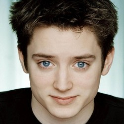
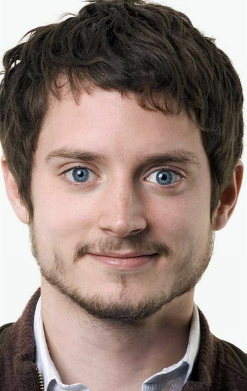
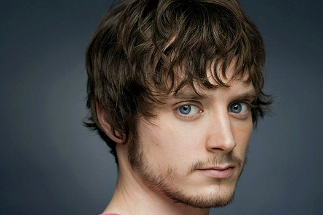

  
Эла́йджа Джо́рдан Вуд (англ. Elijah Jordan Wood; род. 28 января 1981, Сидар-Рапидс, Айова, США) — американский актёр. Наиболее известен по роли Фродо Бэггинса в трилогии «Властелин колец» (2001—2003).До того, как его семья переехала в Лос-Анджелес в 1988 году, Вуд был моделью. Затем он впервые снялся в видео для Полы Абдул, «Forever Your Girl» режиссируемом Дэвидом Финчером. Начал свою актёрскую карьеру в младшей школе, участвуя в постановке «Звуки музыки». В следующем году он сыграл в постановке «Волшебник страны Оз». Дебют в кино — эпизодическая роль в фильме «Назад в будущее 2» (1989). Но только роль сына Эйдена Куинна в фильме Барри Левинсона в 1990 году «Авалон» — третий фильм кинотрилогии Baltimore, состоявшей, помимо этого, из фильмов «Забегаловка» (1982) и «Алюминиевые человечки» (1987) — впервые привлекла внимание к молодому актёру, потому что фильм получил хорошие отзывы критиков и был номинирован на кинопремию «Оскар». Роджер Эберт в своей рецензии сказал: «Появился Элайджа Вуд, и я верю, что это самый талантливый актёр его возраста за всю историю Голливуда». После небольшой роли в фильме Ричарда Гира «Внутреннее расследование» (1990) Вуд получил свою первую значительную роль. Это была роль в фильме «Рай» (1991), в котором он сыграл мальчика, воссоединившего семью (Мелани Гриффит и Дон Джонсон). Он получил хорошие рецензии за своё исполнение, некоторые критики говорили, что он был одним из лучших в кинофильме. Затем он получил роль в фильме «Вечно молодой» вместе с Мэлом Гибсоном и Джейми Ли Кёртис, и в фильме «Стремящийся ввысь» с Ричардом Мазелло (оба фильма вышли в 1992). В 1993 году Вуд снимался с Маколеем Калкиным в фильме «Хороший сын», но картина не имела успеха у зрителей. Характер героя, исполняемого актёром: задумчивый, с хорошими намерениями, и иногда немного озадаченный. Следующим фильмом с Вудом, снятым в том же году, был «Приключения Гекльберри Финна»; этот персонаж Вуда сильно отличался от предыдущих его ролей, но в фильме «Война» (1994) c Кевином Костнером он снова вернулся к привычному образу. Элайджа Вуд в феврале 2006 года Также в 1994 году Вуд сыграл главную роль в фильме «Норт». Этот фильм получил массу отрицательных отзывов, и билеты на него плохо продавались. Следующая роль Вуда «Флиппер» имела гораздо больший успех, также, как и сам фильм режиссёра Энга Ли «Ледяной ветер» (1997). Вуд замечательно исполнил роль задумчивого, эмоционально неподвижного и немного сбивчивого Мики Карвера. В 1998 году появились «Столкновение с бездной» и «Факультет». В этих фильмах роли Элайджи не обладали привычной эмоциональной наполненностью и развитием характеров, но кинофильмы имели успех в прокате и внесли свой вклад в дальнейшую карьеру актёра.